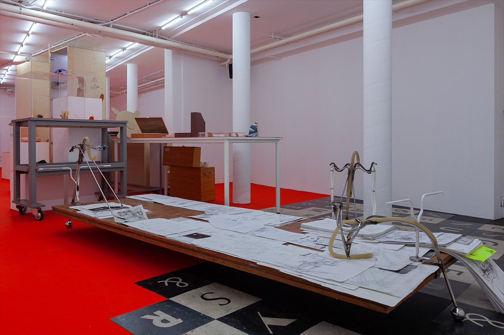
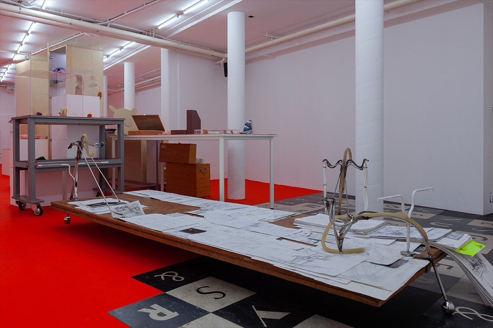
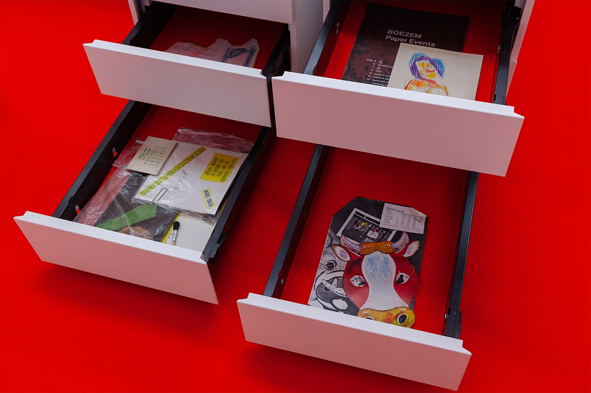
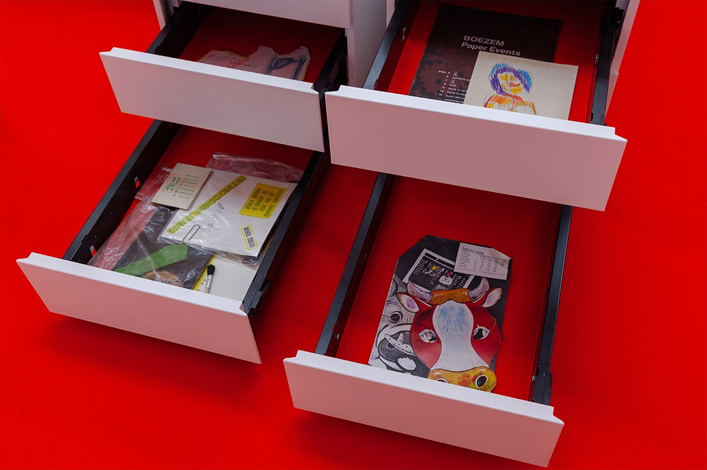

Landscape with Bear
Exhibition
Dates
May 2 — June 1, 2019
Venue
De Appel
Schipluidenlaan 12, Amsterdam
Within the archives of De Appel lies an accumulation of objects – of artworks, props, leftovers, and unidentified materials – that have come to be known as its Unintended Collection. Unintended because no-one made the decision to begin assembling them, nor seeks to add to their number, nor governs their categories. Starting from the eccentricity of this collection, Landscape with Bear presents a single continuous landscape that blurs the line between art object and display. Building from the proposition that practices of collecting are part of regimes of knowledge-production, this exhibition asks, what kinds of knowledge can emerge from the fragmentary, the uncertain and the unstable?
This project has been developed through a collaborative process between 14 individuals from fields spanning curating, art history, architecture, design and archaeology. The Unintended Collection is ambiguous: it has an interpretive flexibility, a material structure and granularity that means that things might be individually removed without collapsing or changing the structure of the whole. For this reason, it is plastic, occupying a space between communities of practice and allowing for cooperation across disciplinary borders. Over the past six months, this group of participants have gathered with and alongside the physical objects of the collection to consider modes of access, and meanings that can be untangled from these relations. From these meetings, participants have developed a series of interwoven narratives that materialise as sound, image, physical architecture and text throughout the space of the exhibition.
With
Alisa Blakeney, Aram Lee, Aude Mgba, Bruno Alves de Almeida, Cookies (Antonio Barone, Alice Gregoire, Federico Martelli, Clement Perisse), Dita Birkensteina, fanfare (Lotte van de Hoef, Freja Kir), Miguel John Versluys, Shen Xin, Sofia Dourron, Tamar Shafrir
Press
"The productivity of eccentricity"
Metropolis M, 06.05.2019
Photos
Konstantin Guz, Cassander Eeftinck Schattenkerk
 

 


Aram Lee, From Props to Objects, 2019, filmed performance (video still)

Jan Hüskes, DIDTHEYSTEPONYOURTRUMPET?, 2019, mixed-media installation